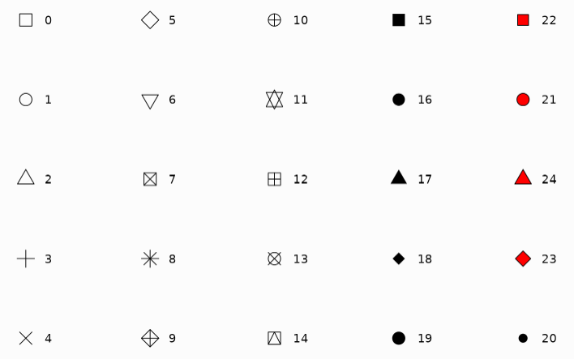
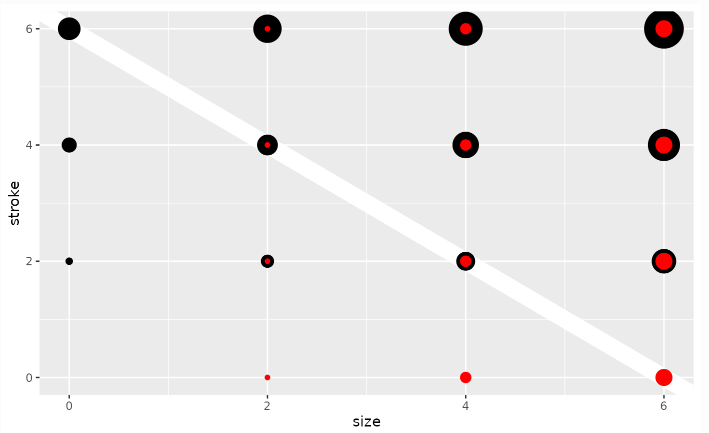

4 数据可视化
4.0.1 ggplot2 语法
ggplot2的核心理念是将数据和绘图分离
| data | 数据 |
| aes | 数据中的变量和绘图属性之间的映射关系 |
| geom | 至少一个几何图层 |
4.0.2 geom图层
4.0.2.1 散点图
geom_point
| aes |
|---|
| x |
| y |
| alpha |
| colour |
| fill |
| group |
| shape |
| size |
| stroke |
geom_path: 根据数据中观测的顺序连接坐标点
geom_step: 阶梯图
| aes | argument | |
|---|---|---|
| x | lineend | round; square; butt |
| y | linejoin | round; bevel; mitre |
| alpha | linemitre | |
| color | arrow | |
| group | ||
| linetype | ||
| linewidth |
4.0.2.2 参考线
geom_adline: 斜线
geom_hline: 水平线
geom_vline: 垂直线
| aes | geom | |
|---|---|---|
| alpha | geom_abline | slope; intercept |
| color | geom_vline | xintercept |
| linetype | geom_hline | yintercept |
| linewidth |
4.0.2.3 条形图
geom_col
| aes | argument | |
|---|---|---|
| x | just | default: 0.5 |
| y | ||
| alpha | ||
| color | ||
| fill | ||
| group | ||
| linetype | ||
| linewidth |
4.0.2.4 点阵图
geom_dotplot
| aes | argument | |
|---|---|---|
| x | method | dotdensity; histodot |
| y | binaxis | x; y |
| alpha | binwidth | |
| color | ||
| fill | ||
| group | ||
| linetype | ||
| stroke | ||
| weight |
4.0.2.5 垂直区间图（误差条）
geom_crossbar / geom_errorbar / geom_linerange / geom_pointrange
| aes |
|---|
| x |
| y |
| xmin |
| ymin |
| xmax |
| ymax |
| alpha |
| color |
| group |
| linetype |
| linewidth |
Note: geom_pointrange 多一个aes(size).
4.0.2.6 线段（箭头）
geom_segment: (x,y) 到 (xend,yend)的直线
geom_curve: 曲线
| aes |
|---|
| x |
| y |
| xend |
| yend |
| alpha |
| colour |
| group |
| linetype |
| linewidth |
4.0.2.7 区间图
geom_ribbon: 绘制从ymin–>ymax一个区域图
geom_area: ymin =0 时的特殊情况
| aes |
|---|
| x |
| y |
| xmin |
| ymin |
| xmax |
| ymax |
| alpha |
| color |
| fill |
| group |
| linetype |
| linewidth |
4.0.2.8 文本标签
geom_text: 只有文本
geom_label: 文本背后还有一个背景文本框（矩形）
| aes | |
|---|---|
| x | |
| y | |
| label | |
| alpha | |
| angle | |
| color | |
| family | |
| fontface | |
| group | |
| hjust | |
| lineheight | |
| size | |
| vjust | |
| fill | only for geom_label |
Note: check_overlap 仅对geom_text有效。
4.0.3 aes-specs映射属性
4.0.3.1 linetype
| linetype (numeric) | linetypevalue (character) |
|---|---|
| 0 | blank |
| 1 | solid |
| 2 | dashed |
| 3 | dotted |
| 4 | dotdash |
| 5 | longdash |
| 6 | twodash |
| 11 | |
| 18 | |
| 1f | |
| 81 | |
| 88 | |
| 8f | |
| f1 | |
| f8 | |
| ff |
4.0.3.2 shape形状

4.0.3.3 stoke

justification对齐方式
| just | comments |
|---|---|
| hjust | 水平对齐 |
| vjust | 纵向对齐 |
| hjust = 0 | 左对齐；left |
| hjust = 0.5 | 居中；middle |
| hjust = 1 | 右对齐；right |
| vjust = 0 | 底部；bottom |
| vjust = 0.5 | 中间；center |
| vjust = 1 | 顶部；top |